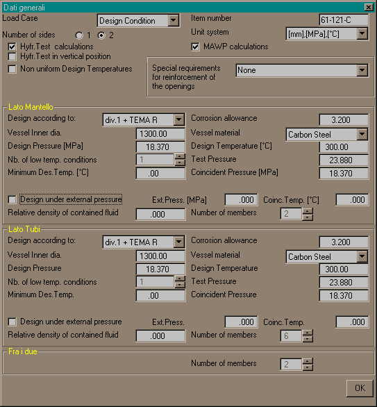

A seguito della creazione di un nuovo progetto o dell'apertura di un progetto esistente (menu 'File/Apri') appare automaticamente la finestra seguente (essa può essere richiamata in seguito tramite il menu 'Dati/Dati Generali'):

Si tratta di dati informativi che non hanno alcuna influenza sui calcoli
Numero di lati dell'apparecchio. Per maggiori dettagli vedi Numero di lati
Scelta del sistema di unità di misura
Selezionare quando si desidera eseguire le verifiche in prova idraulica. Vedi Calcoli in prova idraulica
Se questa opzione viene selezionata, al termine del calcolo di verifica di ogni membratura e di ogni apertura viene eseguito in automatico il calcolo delle MAWP nelle quattro condizioni Cold & New, Hot & New, Cold & Corroded, Hot & Corroded. Questi valori vengono conservati a livello globale dell'apparecchio, e vengono utilizzati per compilare la tabella delle MAWP, ed eventualmente calcolare il valore della pressione di prova idraulica.
Se si seleziona questa opzione sarà possibile assegnare ad ogni membratura una temperatura di progetto specifica. In caso contrario tutte le membrature di un lato erediteranno la temperatura di progetto definita per quel lato, indipendentemente dal dato specificato per ciascuna singola membratura. Le membrature appartenenti al lato intermedio erediteranno la maggiore tra la temperatura di progetto lato tubi e quella lato mantello. Tuttavia in questo caso, anche se l'opzione non è selezionata, e se si specifica manualmente una temperatura non inferiore alla minore delle temperature di progetto dei due lati, prevarrà il dato manuale.
E' possibile applicare norme differenti ai due lati. Per esempio un lato può essere in div.1 e l'altro in div.2. Alle membrature di confine ('fra i due lati') dovrà essere applicata una normativa, che potrà essere quella del lato tubi o quella del lato mantello.
Nel caso dei tubi scambiatori, qualora si applichino ai due lati due normative diverse, si potrà scegliere tra una regola automatica (la normativa del tubo scambiatore è sempre quella del lato tubi, indipendentemente dalla scelta effettuata per la normativa applicabile alle membrature di separazione dei lati) e l'applicazione della suddetta effettuata scelta.
Questo dato serve solo per l'applicazione delle norme TEMA relative agli spessori minimi. Esso è utilizzato anche nel calcolo del battente idrostatico. Il diametro effettivo di ciascuna membratura (cilindrica e non) sarà specificato nei dati relativi alla singola membratura.
Questo dato identifica preliminarmente il tipo di materiale del vessel. Esso serve per l'applicazione di alcune norme TEMA, che dipendono dal fatto se il materiale è acciaio al C, inossidabile, o forgiato.
Si inserisce qui il numero di membrature presenti sul lato in questione. Le membrature vengono tutte inizializzate come cilindri. Sarà poi possibile trasformare la singola membratura nel tipo desiderato tramite il menu 'Dati/Concerti'